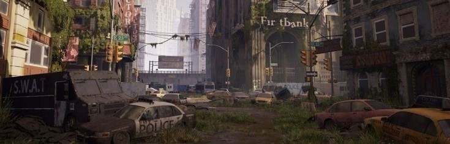
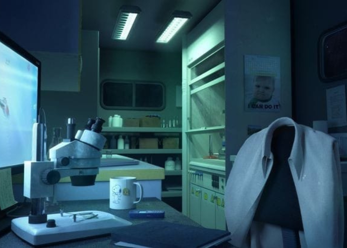
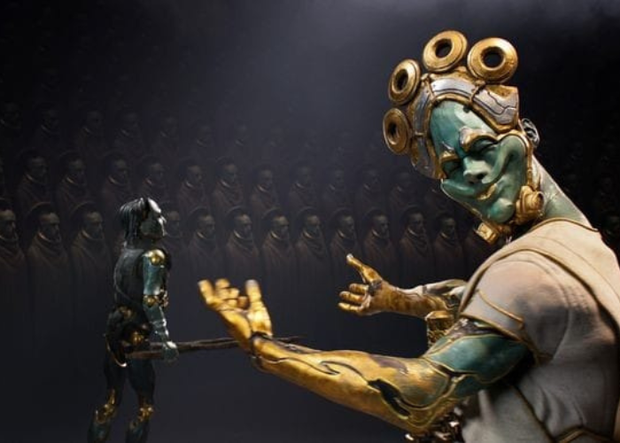
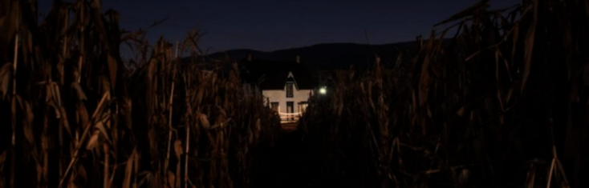
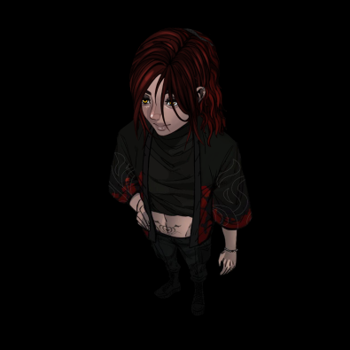
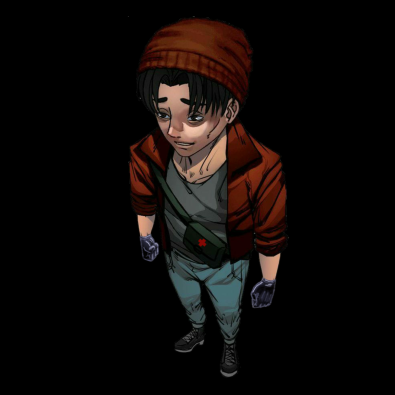
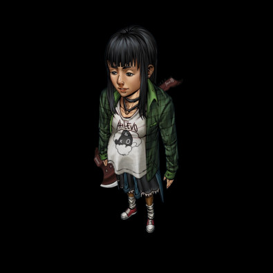
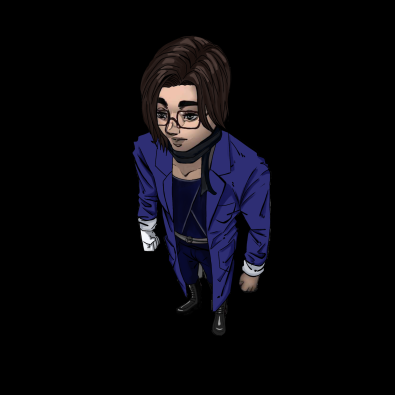
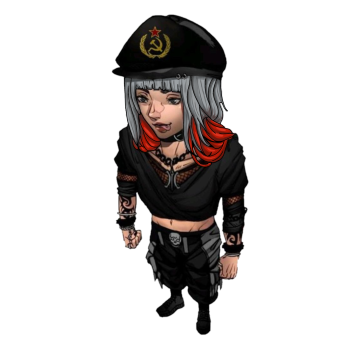

A BOEC, conhecida como Batalhão de Operações Especiais Carmesim, foi fundada no ano de 2001 por Kali Cesarini, uma mulher que viu a necessidade urgente de criar uma força de resistência contra as ameaças emergentes após a queda do governo e da sociedade em geral. Kali é filha de Gaspar Cesarini, um bilionário e filantropo renomado, cujas atividades caritativas e empresariais eram amplamente conhecidas. No entanto, Gaspar havia desaparecido misteriosamente há anos, deixando Kali com um legado complexo.
Com o colapso da Ordo Realitas, a organização que anteriormente mantinha a ordem e combatia as forças paranormais lideradas por Salazar Montes, o mundo mergulhou no caos. Salazar, com seu domínio sobre o paranormal e suas ações devastadoras, instaurou um reinado de terror e destruição. Sem uma organização para enfrentar essa nova realidade sombria, Kali se viu compelida a agir. Com a herança deixada por seu pai, ela decidiu fundar a BOEC, uma tropa de elite concebida para enfrentar e erradicar as ameaças que assolavam o mundo.
A BOEC não é uma força comum. Seus membros são submetidos a um treinamento rigoroso e exaustivo, empurrando-os ao limite de suas capacidades físicas e mentais. Eles são preparados para enfrentar adversidades, utilizando tanto habilidades convencionais quanto poderes paranormais, sem restrições quanto ao uso de força letal. Kali acredita firmemente que, para vencer um mundo brutal, sua organização deve ser ainda mais implacável.
Os agentes da BOEC não recebem remuneração financeira. Em vez disso, eles encontram motivação na promessa de segurança e proteção para si mesmos e seus aliados. Cada membro está ciente de que sua luta é pelo bem maior, para que um dia o mundo possa emergir do caos e retornar à paz. A missão da BOEC é clara: tudo é feito pelo povo e para o povo, com a esperança de restaurar a normalidade e a tranquilidade.
Pelo fim do inebriável suplício.
Pelo nosso sangue, Vermelho Carmesim.

O MUNDO ATUAL
O mundo nem sempre foi deserto e destruído, por milhares de anos, a vida corria normalmente na terra. Ainda é possível ver por meio de fotos ou raras gravações, como o mundo foi e com sorte, se algum ladrão ou caçador de recompensa não te encontrar, em meio a uma cidade fantasma, tentar imaginar como era a vida em uma sociedade com Ordem e regras a serem seguidas.
A verdadeira mudança no planeta, veio junto com o nome Salazar Montes, um cientista pouco conhecido, que apesar disso, tinha grande capacidade e junto a outros companheiros, prometia trazer inovações tecnológicas e revolucionar a humanidade. Durante a década de 90, Salazar e seu grupo conseguiram criar a P.A.G.A.(Protótipo: Agente de Gerenciamento Autônoma) , que tinha como principal objetivo, separar e organizar as informações que a humanidade já possuía em apenas um lugar. Em 1999, o seu projeto avançou, automatizando ainda mais a máquina criada anteriormente. A automação se daria pela junção do ser humano com seres robóticos, o que faria a espécie humana isenta dos erros causados pela nossa “mente humanitária”. Os seus colegas cientistas trabalhando no projeto da P.A.G.A. desistiram ao ver Salazar ultrapassar os limites da ética, deixando-o sozinho com a tarefa de “salvar o mundo da falha humana". Mesmo com o mundo contra, alheio a sociedade, Salazar construiu A.G.N.E.S.(Agente de Gerenciamento Neutro Exato Singular) , uma máquina a qual ele se fundiria.
A partir desse momento, não temos muitas informações do que Salazar fez, apenas dos acontecimentos a partir do dia 19/09/2000. Nesse dia, em Amaldiçópolis, uma cidade do interior de Minas Específicas, um homem conhecido como Ranael, que era morador de rua, misteriosamente apareceu exibindo comportamentos estranhos, utilizando uma máscara de bronze. Após algumas horas no centro da cidade, agindo de maneira nunca vista antes, Ranael agarrou um outro homem, de nome João Oliveira, e colocou em seu rosto, uma máscara muito parecida com a sua própria e saiu, deixando João desacordado no chão. Mais tarde no mesmo dia, moradores relataram o mesmo comportamento vindo de João, agora com a máscara no rosto. Esse foi o primeiro caso de muitos outros que viriam a acontecer pelo mundo todo, cada vez em maior escala, destruindo vagarosamente a sociedade antes formada e em pouco mais de 2 anos, tudo já havia mudado.
Muitas pessoas foram mortas nesse processo e os sortudos que não se transformaram em uma “máscara”, hoje se escondem pelos desertos cantos do que um dia foi considerado um mundo dos humanos, se protegendo de tudo e todos e sempre buscando acima de tudo, sobreviver. O governo também colapsou e algumas organizações, como a antiga Ordo Realitas, foi desmembrada em pequenos grupos. Um deles, sendo a BOEC, um grupo de pessoas com pensamentos e ideais alinhados, liderados por Kali Cesarini, a antiga líder da Ordem. Outras organizações que não estão tão ligadas à ordem surgiram com propósitos não tão nobres quanto a BOEC, por isso, sempre é preciso ter cuidado não só com criaturas paranormais ou as máscaras, criadas pelo Salazar, mas também com as pessoas.
Nunca confie em ninguém.

PROGRAMA DE CRIAÇÃO DE HUMANOS MAIS PODEROSOS
Os estudiosos liderados por Angelique alcançaram um avanço na ciência paranormal, desenvolvendo a capacidade de criar humanos com maior aptidão paranormal. Devido a recursos limitados, a organização busca voluntários para gerar crianças que serão fortalecidas por rituais, permitindo que os agentes continuem em missão.
A segurança completa ainda não está garantida, e a pesquisa continua. Interessados em voluntariar-se devem contatar Angelique.
16/10/2004

MÁSCARAS DE BRONZE
Apesar da dificuldade em capturar as máscaras de bronze, recentemente, agentes prestigiados do Batalhão conseguiram subjulgar e trazer até a base principal. Os testes com as 2 máscaras capturadas serão realizados o mais rápido possível e a BOEC tem esperanças de que com os testes finalmente se achará uma forma de reverter o processo das máscaras.
Evite ao máximo o contato com uma máscara, caso encontre uma. Corra, fuja, se esconda. Se não tiver uma dessas opções, torça pra ser uma máscara inferior e tente trazê-la para o batalhão, se não for uma máscara inferior, que o Carmesim do seu sangue sirva de inspiração para os outros agentes. Nada disso será em vão. Pelo nosso sangue, Vermelho Carmesim.
05/07/2004
O SUMIÇO DE KALI CESARINI
Após 2 mêses de sua saída da organização, a comunicação com Kali foi totalmente rompida. Não se sabe ao certo se o corte foi por parte da ex-agente ou se ela foi perdida em seus objetivos.
Hoje, dia 25 de março de 2004, faz 1 ano que as comunicações com Kali foram cortadas e a ex-líder do batalhão foi oficialmente dada como desaparecida.
A equipe de controle 1, irá iniciar as buscas por ela. Se ela ainda está aí, iremos achá-la, se ela foi morta, foi pela BOEC. Pelo nosso sangue, vermelho carmesim.
25/03/2004
ANGELIQUE E DIAVOLO LÍDERES
Na última terça-feira (25), a BOEC sofreu uma grande perda. A líder da organização, Sr. Kali Cesarini, deixou as dependências da BOEC durante a madrugada, deixando todos membros do batalhão surpresos. Mesmo sua filha, Astrid, não teria conhecimento das intenções da mãe por trás de sua partida. Apesar da tristeza de perder sua líder, a organização prevalecerá forte, tendo como nova liderança os dois conhecidos ex-agentes da Ordo Realitas e parceiros de Kali, Angelique Morningstar e Diavolo.
Durante a sexta-feira(28) o Sr.Morningstar e o Sr.Diavolo farão uma reunião para explicar de forma definitiva o sumiço da antiga líder, Sr.Kali Cesarini e traçar os novos objetivos do batalhão, já que a partir do momento presente, nossas prioridades mudaram. Novos ventos chegaram, e a organização terá que se alinhar com os perigos, que são cada vez piores. Esperamos que ela volte.
25/03/2003

1 MISSÃO EM ABERTO
Os agentes Astrid Abadeer, Arthur Torres, Sofia Souza e Elena Sgàile foram convocados para uma missão altamente delicada na região anteriormente conhecida como o Sul do Brasil. O objetivo central da operação é reunir informações cruciais sobre Kali Cesarini, uma figura de interesse estratégico.
Esta missão é classificada como de extração de informações, priorizando o sigilo e a eficiência. Não há necessidade de mobilizar grandes recursos militares; ao contrário, a ênfase está na discrição e na habilidade em evitar qualquer forma de detecção que possa comprometer o sucesso da missão ou colocar os agentes em perigo.
Eva, designada como líder da operação, fornecerá orientações detalhadas aos agentes assim que se reportarem ao Batalhão Centro-Oeste. É fundamental que cada agente esteja completamente preparado e comprometido com as diretrizes estabelecidas, garantindo não apenas o êxito da missão, mas também a segurança pessoal e a integridade do grupo.
A cooperação estreita entre os agentes, aliada ao profissionalismo e à cautela em cada etapa da operação, será fundamental para alcançar os objetivos estabelecidos com sucesso e sem incidentes.
Local: -24.2317041 -51.2389089
Informações ocultistas: Caso o agente N6° não seja exatamente o que esperamos e apresente algum comportamento ou características paranormais indesejadas e que revele que ele poderá apresentar riscos no futuro para a organização, elimine-o.

VOCÊ
Classe: Ocultista Altura: 1,78 m Peso: 70 kg Idade: 22 anos

ARTHUR DA SILVA TORRES
Classe: Especialista Altura: 1,79 m Peso: 67 kg Idade: 24 anos

ASTRID EVELYN ABADEER
Classe: Combatente Altura: 1,67 m Peso: 63 kg Idade: 20 anos

ELENA DREXEL SGÀILE
Classe: Especialista Altura: 1,77 m Peso: 60 kg Idade: 25 anos

EVANGELINE VERÍSSIMO
Classe: Combatente Altura: 1,83 m Peso: 75 kg Idade: 26 anos